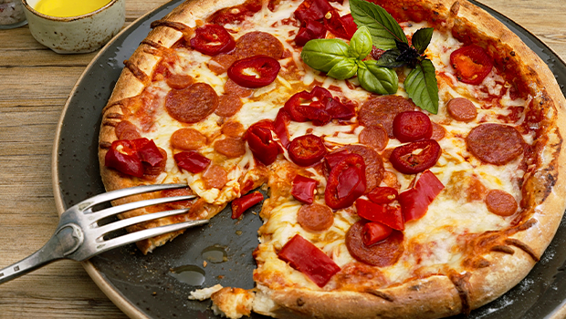
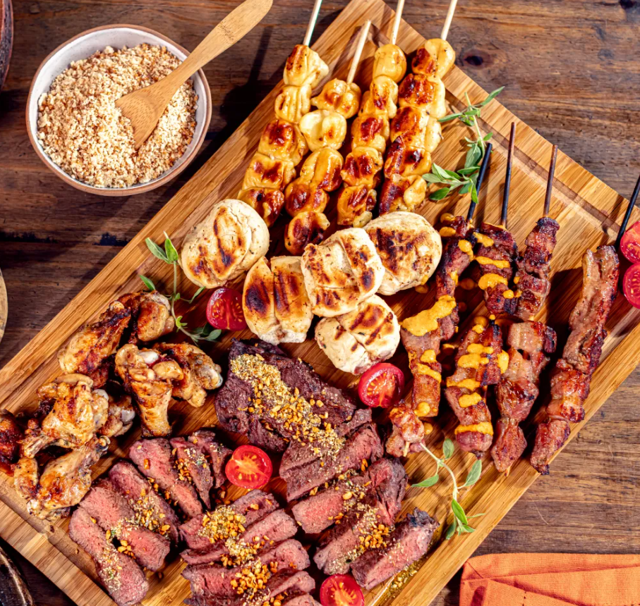

Pizza
A pizza é um prato de origem italiana, feito com uma base de massa coberta com molho de tomate, queijo e diversos ingredientes como carnes, vegetais e especiarias.
Mais Informações

Sushi
O sushi é um prato japonês que consiste em arroz temperado com vinagre, combinado com peixe cru, frutos do mar ou vegetais, frequentemente servido com molho de soja.
Mais Informações
Tacos
Os tacos são um prato tradicional mexicano, consistindo em uma tortilla dobrada ou enrolada, recheada com carne, feijão, queijo, alface e outros ingredientes.
Mais Informações
Hambúrguer
O hambúrguer é um prato popular que consiste em um disco de carne moída, geralmente bovina, servido em um pão, frequentemente acompanhado de queijo, alface, tomate e molhos.
Mais Informações

Shawarma
Shawarma é um prato do Oriente Médio feito com carne assada em espeto vertical, servida em pão sírio com molhos e vegetais.
Mais Informações
Curry
O curry é um prato de origem indiana, feito com uma mistura de especiarias e ervas, geralmente cozido com carne, legumes ou grãos, e servido com arroz.
Mais Informações
Churrasco
O churrasco é um método de cozinhar carne, geralmente em uma grelha ou churrasqueira, popular em várias culturas, especialmente na América Latina.
Mais Informações

Crepe
O crepe é uma fina panqueca de origem francesa, que pode ser recheada com ingredientes doces ou salgados, como frutas, chocolate, queijo ou presunto.
Mais Informações
Bolo de Chocolate
O bolo de chocolate é uma sobremesa feita com massa de bolo que contém chocolate, frequentemente coberta com glacê de chocolate ou recheios variados.
Mais Informações
Gelato
O gelato é um tipo de sorvete italiano, conhecido por sua textura cremosa e sabores intensos, feito com leite, açúcar e ingredientes naturais.
Mais Informações